PRODUCTION RGBA timer, completed
64 × 64 native pixels
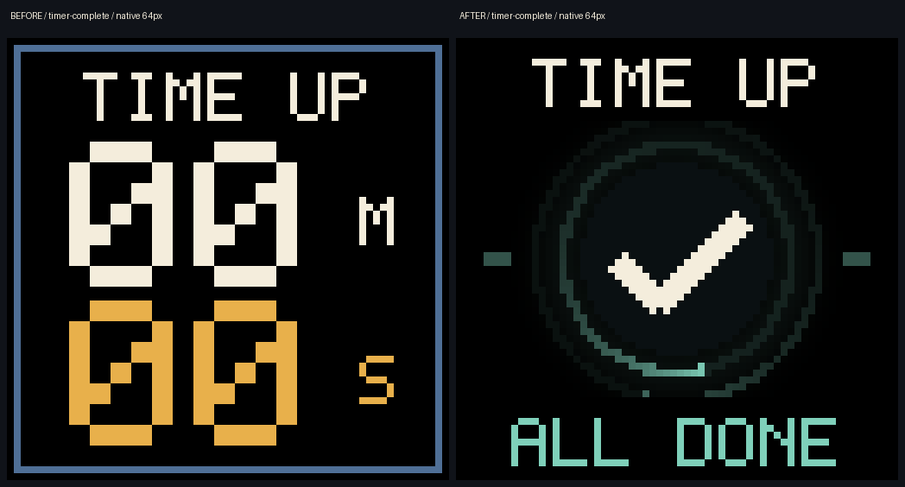
192 × 192 native pixels
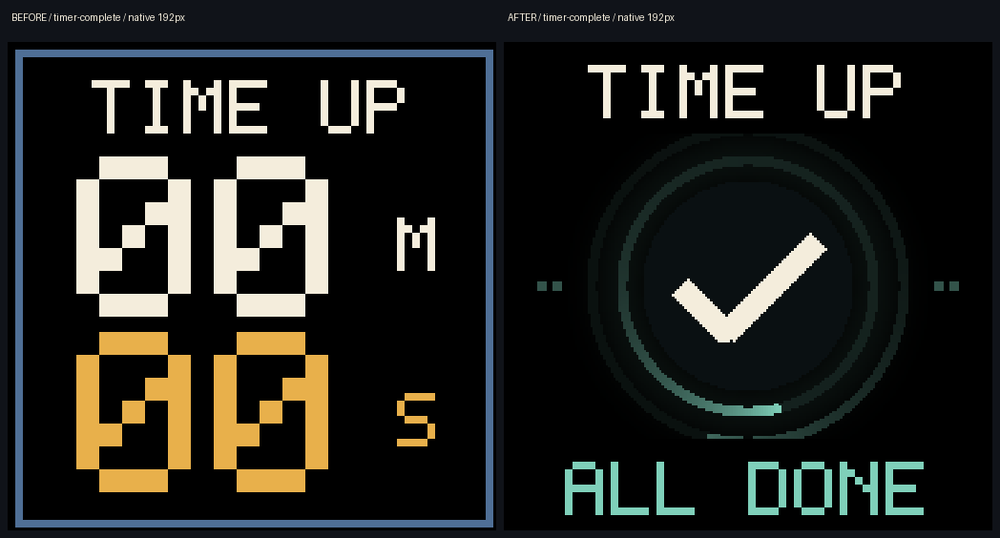
512 × 512 native pixels
Watch the light settle · 12 seconds
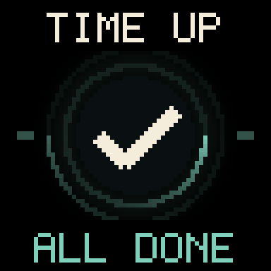
Your daily cue
64 × 64 native pixels
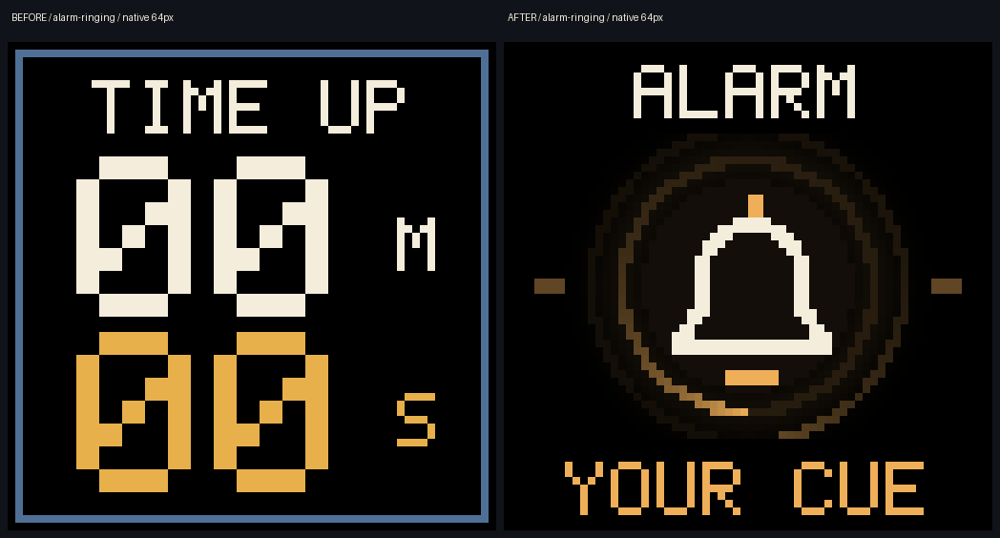
192 × 192 native pixels
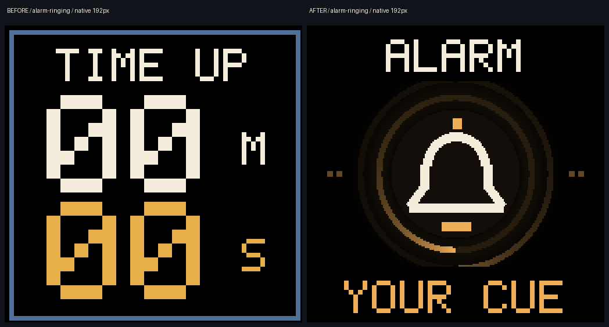
512 × 512 native pixels
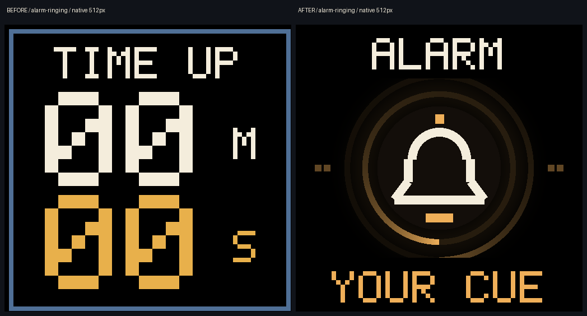
Watch the light settle · 12 seconds
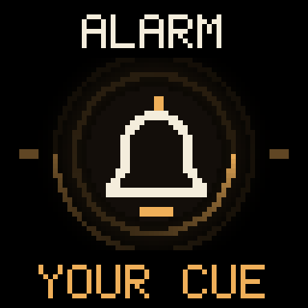
Five more minutes
64 × 64 native pixels
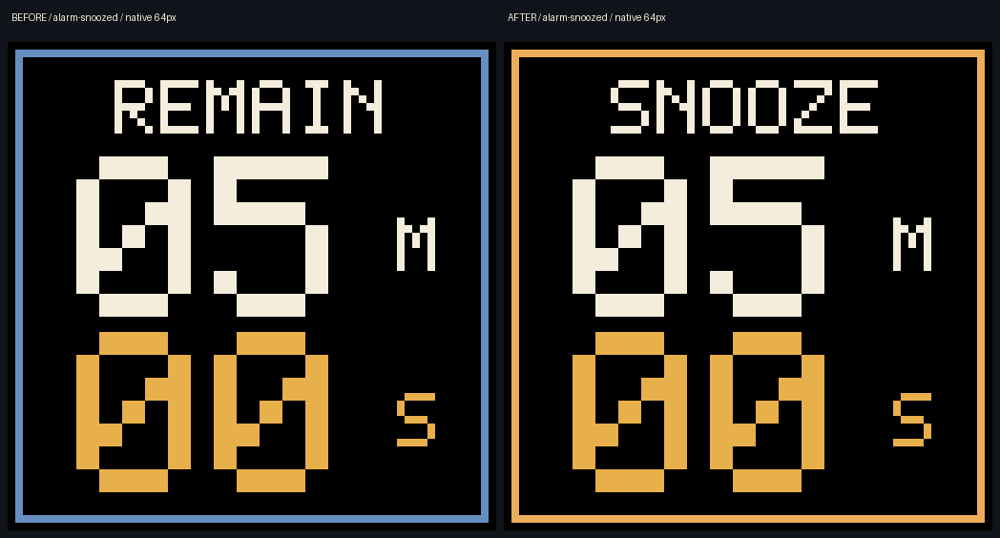
192 × 192 native pixels
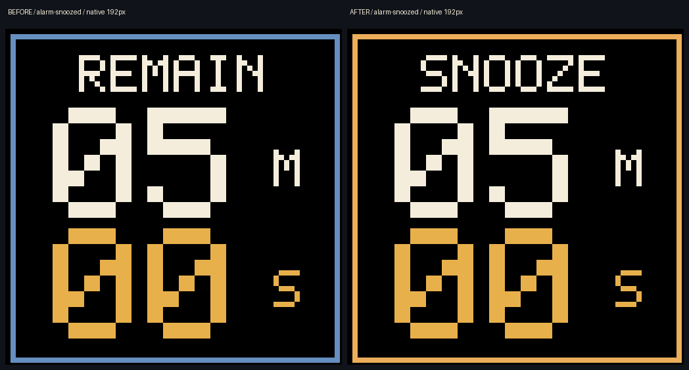
512 × 512 native pixels
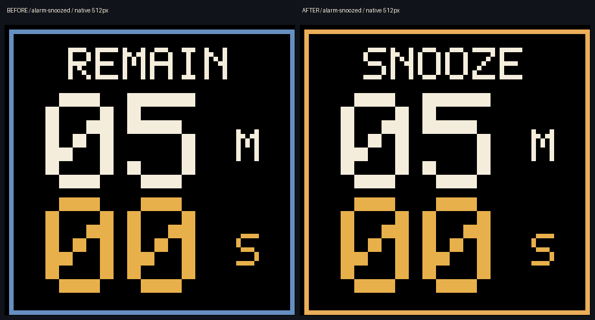
NATIVE STATESReady, thinking, offline, and in between.
Search by intention
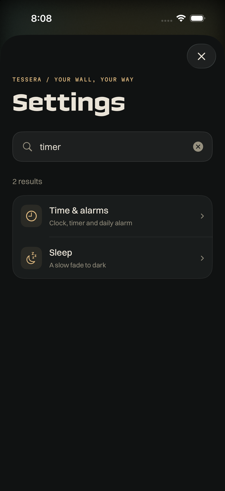
No search results
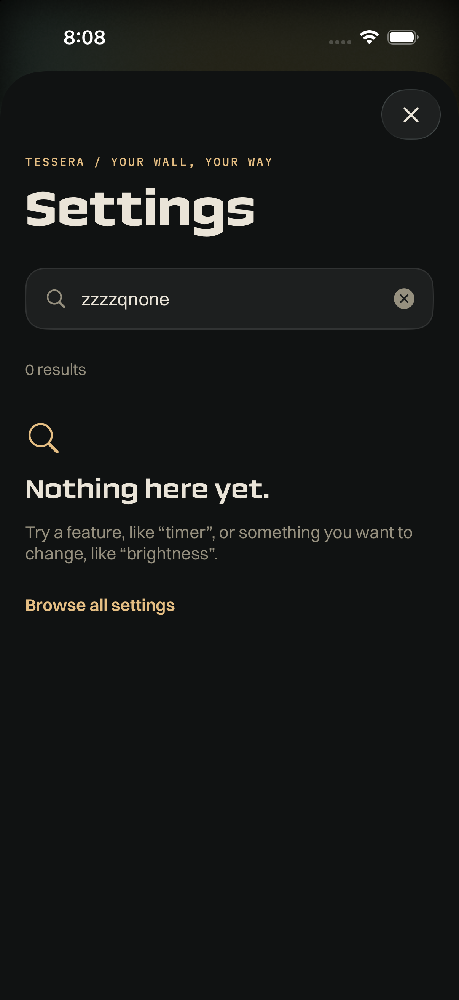
Care & connection
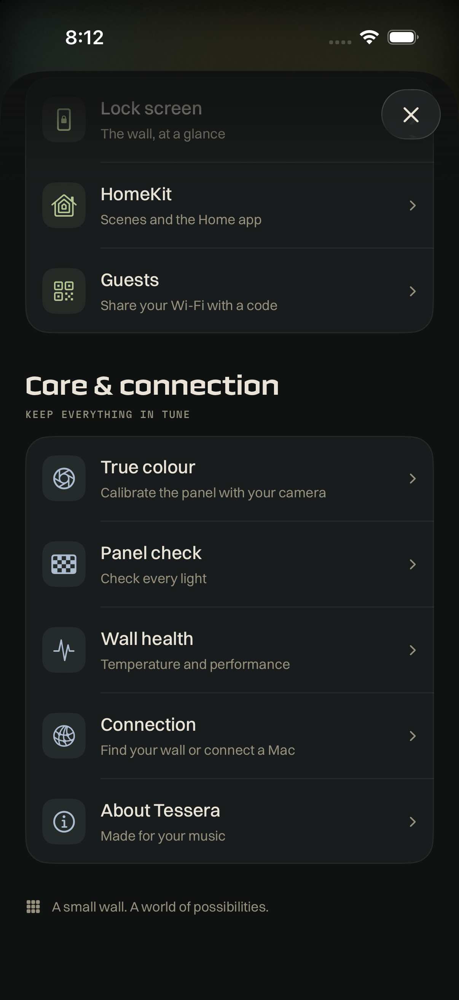
An answer, kept here
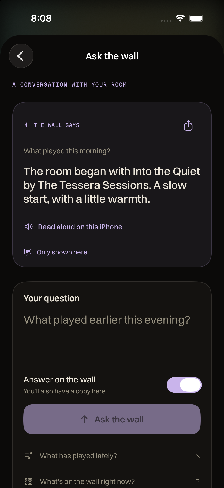
Thinking
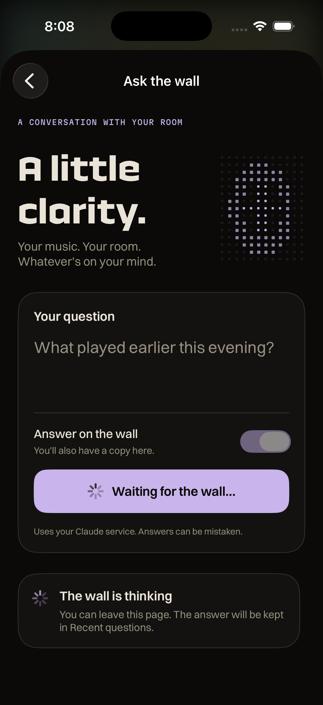
Connect a service
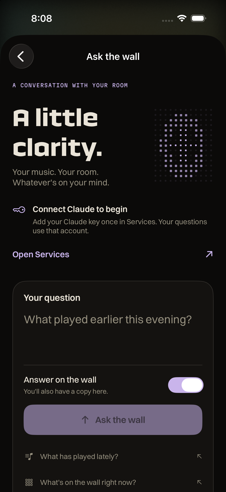
Actual ticker preview
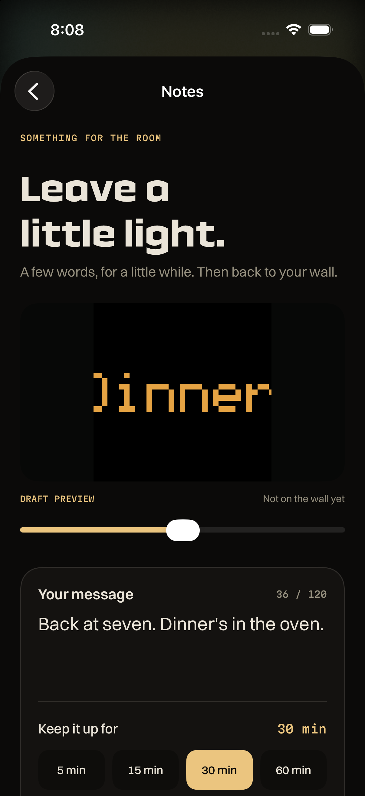
A note on the wall
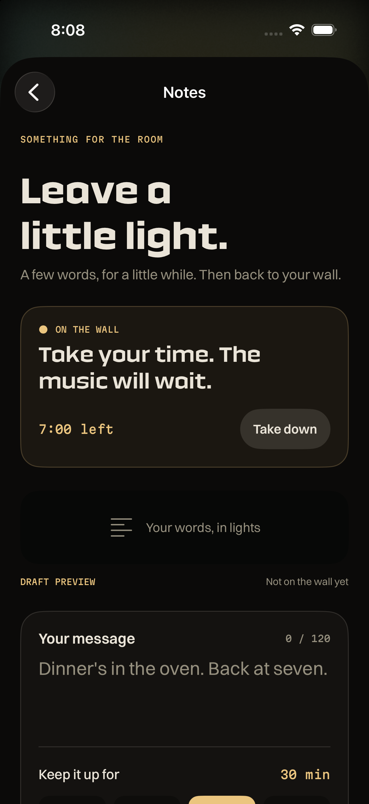
One route to the controls
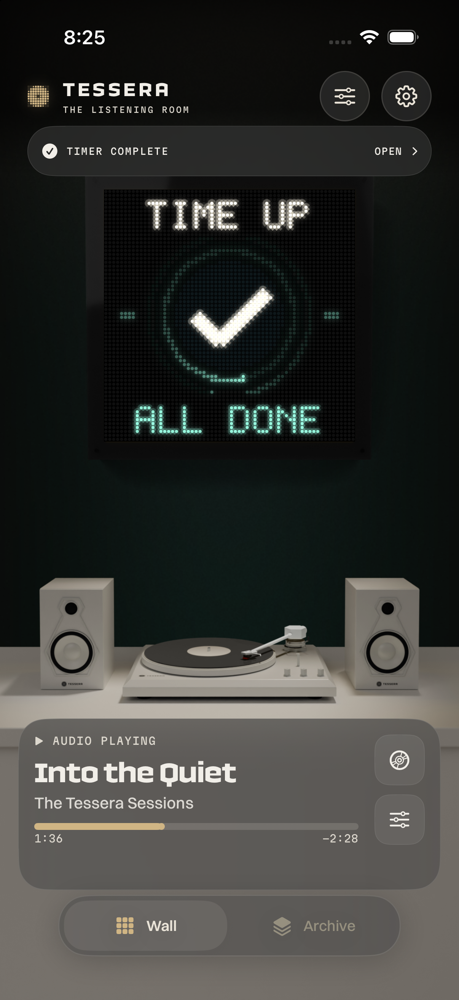